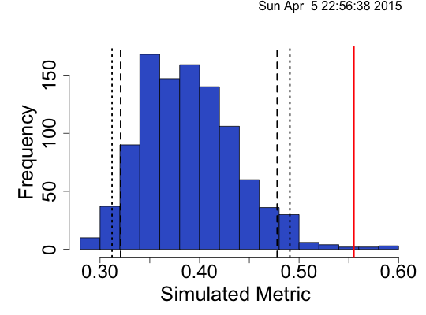
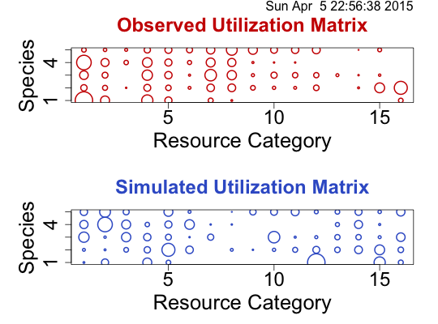

Usage
niche_null_model(speciesData, algo = "ra3", metric = "pianka", nReps = 1000, rowNames = TRUE, saveSeed = FALSE, algoOpts = list(), metricOpts = list())
Arguments
- speciesData
- a data frame in which each row is a species, each column is a resource utilization category, and the entries represent the quantity of the resource used by each species. Examples might be the amount of time a species spends foraging in different microhabitats, the biomass of different prey types, or counts of the number of times an adult female oviposits eggs on different species of a host plant.
- algo
- the algorithm to use, must be "ra1", "ra2", "ra3", "ra4"
- metric
- the metric used to caluclate the null model: choices are "pianka", "czekanowski", "pianka_var", "czekanowski_var", "pianka_skew", "czekanowski_skew"; default is pianka
- nReps
- the number of replicates to run the null model.
- rowNames
- Does your dataframe have row names? If yes, they are stripped, otherwise FALSE for data that has no row names
- saveSeed
- TRUE or FALSE. If TRUE the current seed is saved so the simulation can be repeated
- algoOpts
- a list containing all the options for the specific algorithm you want to use. Must match the algorithm given in the `algo` argument
- metricOpts
- a list containing all the options for the specific metric you want to use. Must match the metric given in the `metric` argument
Description
Create a niche overlap null models, choices of algorithm and metric are constrained to be valid for niche null models.
Examples
# Load MacAruthur warbler data
data(dataMacWarb)
Warning message:
data set ‘dataMacWarb’ not found
# Run the null model
warbMod <- niche_null_model(dataMacWarb,nReps=100000)
|=========================================================================================| 100%
# Summary and plot info
summary(warbMod)
Time Stamp: Thu Mar 5 23:27:24 2015
Reproducible: FALSE
Number of Replications: 1e+05
Elapsed Time: 37 secs
Metric: pianka
Algorithm: ra3
Observed Index: 0.55514
Mean Of Simulated Index: 0.39032
Variance Of Simulated Index: 0.0023272
Lower 95% (1-tail): 0.3219
Upper 95% (1-tail): 0.4783
Lower 95% (2-tail): 0.31224
Upper 95% (2-tail): 0.49999
Lower-tail P = 0.99593
Upper-tail P = 0.00407
Observed metric > 99593 simulated metrics
Observed metric < 407 simulated metrics
Observed metric = 0 simulated metrics
Standardized Effect Size (SES): 3.4165
plot(warbMod)

plot(warbMod,type="niche")
